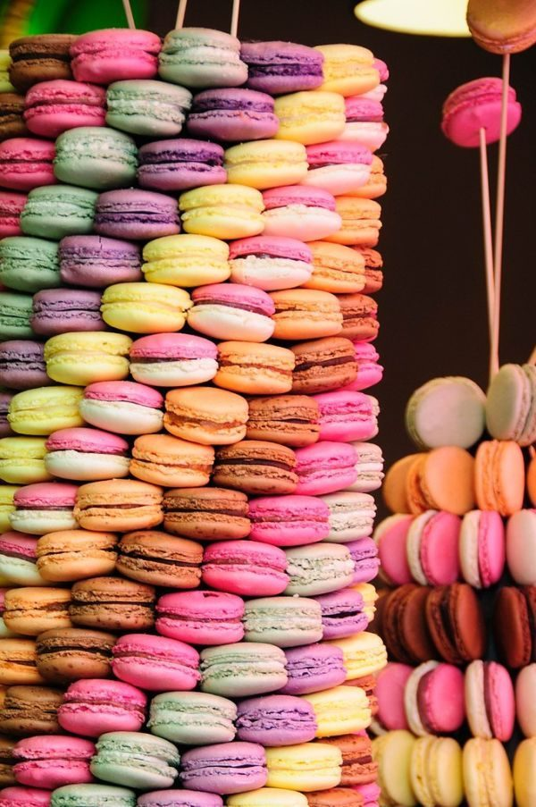

カフェ / 三重県松阪市
f/1.4カメイサンのカフェ
三重県松阪市のカフェ「カメイサンのカフェ」のご案内ページです。営業時間やメニューなど、詳しいことは準備中。電話番号とInstagramは掲載しています。

制作側の連想(お店の理念・由来とは無関係)
「カメ」の響きから、カメラの絞りへ。
屋号の由来は分かりません。制作側は、屋号の響きからカメラを連想し、レンズの「絞り値(F値)」をこのサイトの案内役にしました。ページごとに f/1.4、f/2、f/2.8…と数字が増え、数字が大きいほど絞り羽根の開きは小さくなります。これは制作側の連想で、お店の理念・由来とは無関係です。
- f/1.4ホーム
- f/2メニュー
- f/2.8店のこと
- f/4口コミ
- f/5.6アクセス
開放で並べる(イメージ)
カフェで思い浮かぶものを、八角の窓から。
写真は松阪市のものではありません。カフェという業種から連想した、国外・撮影地不明のフリー素材です。お店で提供しているものを示すものではありません。



ご案内
お店のこと(確認できたものだけ)
| 所在地 | 〒515-0816 三重県松阪市西之庄町４４−１１ |
|---|---|
| 電話 | 0598-31-3372 |
| 営業時間 | 準備中 |
| 定休日 | 準備中 |
| ご予約 | 準備中 |
| 駐車場 | 準備中 |
| SNS | Instagram @kameisannocafe |